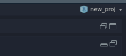
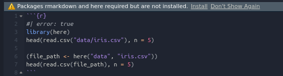

dir.create("data")
write.csv(iris, file = "data/iris.csv")RStudio Project worksheet
Basic Setup
1) Create Rproj new_proj from scratch
\(\rightarrow\) double check project indication in RStudio upper right corner

2) Create some data - in console run:
\(\rightarrow\) In finder, check that the csv file was created
{here} example
3) Create a classic R script (code/script.R)
library(here)
head(read.csv("data/iris.csv"), n = 5)
(file_path <- here("data", "iris.csv"))
head(read.csv(file_path), n = 5)\(\rightarrow\) run the script interactively in RStudio:
- note how
setwd()is not needed - note how tab complete works for strings / file-paths
4) Create a Rmarkdown file (code/script.Rmd)
```{r}
#| error: true
library(here)
head(read.csv("data/iris.csv"), n = 5)
(file_path <- here("data", "iris.csv"))
head(read.csv(file_path), n = 5)
```\(\rightarrow\) knit document, look at error message
git demo in RStudio
5) In terminal pane (not console!)
git init\(\rightarrow\) re-load project using the project indicator, lookout for apperance og the git pane
\(\rightarrow\) Interactively commit changes (“init”)
{renv} example
6) Start using {renv} within the project
renv::activate()\(\rightarrow\) check git tab (note new folder renv/ and file .Rprofile)
\(\rightarrow\) inspect .Rprofile:
source("renv/activate.R")7) Save currently used packages ({here})
renv::snapshot()The following package(s) will be updated in the lockfile:
# CRAN ===============================
- renv [* -> 0.15.4]
Do you want to proceed? [y/N]: y
* Lockfile written to '~/Desktop/new_proj/renv.lock'.\(\rightarrow\) check git tab (note new file renv.lock)
\(\rightarrow\) inspect renv.lock:
{
"R": {
"Version": "4.2.2",
"Repositories": [
{
"Name": "CRAN",
"URL": "https://cloud.r-project.org"
}
]
},
"Packages": {
"renv": {
"Package": "renv",
"Version": "0.15.4",
"Source": "Repository",
"Repository": "CRAN",
"Hash": "c1078316e1d4f70275fc1ea60c0bc431",
"Requirements": []
}
}
}8) re-load project using the project indicator, open script.Rmd file

\(\rightarrow\) click install (or just run install.packages(c("rmarkdown", "here")))
9) Save new packages to renv.lock, similar like before:
renv::snapshot()\(\rightarrow\) re-inspect renv.lock, note how it was extended
10) For completeness, this is how to restore a saved {renv} environment:
renv::restore()* The library is already synchronized with the lockfile.🎉🎉🎉